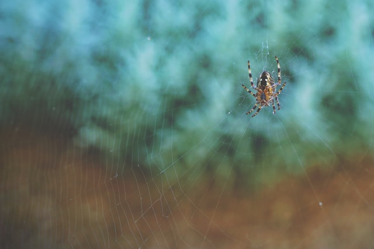

Silk is a natural protein fiber, some forms of which can be woven into textiles. The protein fiber of silk is composed mainly of fibroin and is produced by certain insect larvae to form cocoons. The best-known silk is obtained from the cocoons of the larvae of the mulberry silkworm Bombyx mori reared in captivity (sericulture). The shimmering appearance of silk is due to the triangular prism-like structure of the silk fibre, which allows silk cloth to refract incoming light at different angles, thus producing different colors.
Silk is produced by several insects; but, generally, only the silk of moth caterpillars has been used for textile manufacturing. There has been some research into other types of silk, which differ at the molecular level. Silk is mainly produced by the larvae of insects undergoing complete metamorphosis, but some insects, such as webspinners and raspy crickets, produce silk throughout their lives. Silk production also occurs in hymenoptera (bees, wasps, and ants), silverfish, mayflies, thrips, leafhoppers, beetles, lacewings, fleas, flies, and midges. Other types of arthropods produce silk, most notably various arachnids, such as spiders.
In the Torah, a scarlet cloth item called in Hebrew "sheni tola'at" שני תולעת – literally "crimson of the worm" – is described as being used in purification ceremonies, such as those following a leprosy outbreak (Leviticus 14), alongside cedar wood and hyssop (za'atar). Eminent scholar and leading medieval translator of Jewish sources and books of the Bible into Arabic, Rabbi Saadia Gaon, translates this phrase explicitly as "crimson silk" – חריר קרמז حرير قرمز.